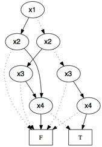
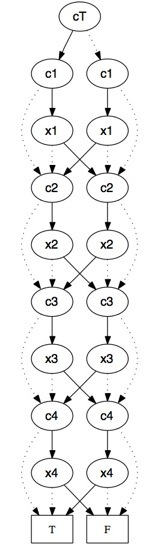
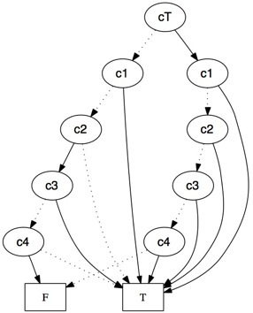
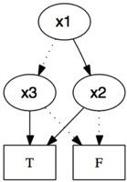

BDD Visualizer Tutorial - Part 3
This is part 3 of a tutorial designed to help you use the BDD Visualizer, a tool that can generate visualizations of Reduced Ordered Binary Decision Diagrams (BDDs).
The BDD Visualizer is located here: http://www.cs.uc.edu/~weaversa/BDD_Visualizer.html.
In part 3 of the tutorial we will use BDDs to factor non-linear Boolean equations.
A factor f of a non-linear Boolean equation g satisfies the following constraint:
-f * g == False
i.e. the negation of the factor conjoined with the original equation is exactly False (unsatisfiable).
Consider the following non-linear Boolean equation:
x1*x2 + x2*x3 + x1 + x3 = 1
This equation can be factored into two linear Boolean equations:
x1 + x3 = 1
x2 = 0
We can prove that these two equations are factors of the original by submitting the following text to the visualizer:
xor(and(x1, x2), and(x2, x3), x1, x3)) ; $1
and(not(xor(x1, x3)), $1) ; Is (x1 + x3 = 1) a factor of
; (x1*x2 + x2*x3 + x1 + x3 = 1)?
and(not(-x2), $1) ; Is (x2 = 0) a factor of
; (x1*x2 + x2*x3 + x1 + x3 = 1)?
print($2, $3)
The result of submitting this example is the following visualization:

If we’re working under the context of trying to find a satisfying assignment to a conjunction of non-linear Boolean equations (non-clausal Satisfiability), discovering that it’s possible to decompose some of our non-linear equations into linear equations may be very beneficial. The best known method for solving systems of non-linear Boolean equations is exponential (2^n), but one can solve linear Boolean equations with only polynomial complexity (n^3) using Gaussian Elimination.
Above, we saw how BDD operations can be used to verify conjectures about potential factors. Unfortunately, this requires us to guess the potential factors, of which there are 2^(n+1). Next, we’ll learn how to use BDD operations to discover all possible linear factors, without any guessing on our part.

For our next example, we’ll use the following (pretty complex looking) equation:
x1*x3*x4 + x3*x4 + x1*x2*x4 + x1*x2*x3 + x2*x3 + x1*x2 = 1
This equation (visualized to the left) has one linear factor.
Can you find it by hand?
To discover the factor automatically, we’ll use a special type of equation called a quadratic equation. And, since we’re looking for linear factors, we’ll specifically use the following quadratic equation (visualized to the right):
c1*x1 + c2*x2 + c3*x3 + c4*x4 + cT = 1

The c variables in a quadratic equation are coefficients that, for our purposes, act as selectors, denoting which x variables will be part of the resulting linear equation, i.e. assigning values {0,1} to the coefficients will result in one of the 2^(n+1) possible linear equations. It’s worth noting that the technique described here can be used to search for factors of any form; simply use a different quadratic equation to find factors of a different form.
Next, we’ll ask the BDD Visualizer to find us configurations of the coefficients that denote linear factors of our complex equation from above. To do this, we’ll again make use of the constraint (-f * g == False).
order(x4, c4, x3, c3, x2, c2, x1, c1, cT)
; $1 - quadratic equation
xor(and(c1, x1), and(c2, x2), and(c3, x3), and(c4, x4), cT)
; $2 - complex equation
xor(and(x1, x3, x4),
and(x3, x4),
and(x1, x2, x4),
and(x1, x2, x3),
and(x2, x3),
and(x1, x2))
; $3 - Find all possible factors
and(not($1), $2)
print($3)
The result of submitting this example is the following visualization:

This doesn’t look very helpful just yet. We’d like to only see valid configurations of the coefficients. For this, we need to existentially quantify away the x variables. Existential quantification allows us to view solutions to only subsets of variables in a BDD. Revising our example, we have:
order(x4, c4, x3, c3, x2, c2, x1, c1, cT)
; $1 - quadratic equation
xor(and(c1, x1), and(c2, x2), and(c3, x3), and(c4, x4), cT)
; $2 - complex equation
xor(and(x1, x3, x4),
and(x3, x4),
and(x1, x2, x4),
and(x1, x2, x3),
and(x2, x3),
and(x1, x2))
; $3 - Find all possible factors
and(not($1), $2)
exist($3, x1, x2, x3, x4) ; $4
print($4)
The result of submitting this example is the following visualization:

Each factor is denoted by the True values in a path from the root to False. There are two paths to False here, namely,
cT = 1, c1 = 0, c2 = 0, c3 = 0, c4 = 0
cT = 0, c1 = 0, c2 = 1, c3 = 0, c4 = 1
These two solutions tell us that there are two linear factors of our complex equation. The True values in these paths denote those linear factors, namely:
1 = 1
x2 + x4 = 1
The first factor is trivial; 1 is a factor of every Boolean equation. The second factor is much more interesting, and was found automatically from among the 32 possible factors. Next, we’ll remove this factor from our original complex equation, simplifying it greatly. To do this we’ll use Generalized Cofactoring (GCF, also known as constrain). The gcf(f, c) command takes two BDDs as arguments and, if c is a factor of f, returns a BDD g such that f == g*c.
; $1 - complex equation
xor(and(x1, x3, x4),
and(x3, x4),
and(x1, x2, x4),
and(x1, x2, x3),
and(x2, x3),
and(x1, x2))
print(gcf($1, xor(x2, x4)) ; Remove the linear factor from the complex equation
The result of submitting this example is the following visualization:

This BDD is ite(x1, x2, x3) (also written as: x1*x3 + x3 + x1*x2 = 1). This means our original equation can be factored into:
x1*x3 + x3 + x1*x2 = 1
x2 + x4 = 1
This is much simpler than our original equation:
x1*x3*x4 + x3*x4 + x1*x2*x4 + x1*x2*x3 + x2*x3 + x1*x2 = 1
We can check to see that our calculations are correct by submitting the following text to the BDD Visualizer:
; $1 - complex equation
xor(and(x1, x3, x4),
and(x3, x4),
and(x1, x2, x4),
and(x1, x2, x3),
and(x2, x3),
and(x1, x2))
; $2 - linear factor
xor(x2, x4)
; $3 - non-linear factor
ite(x1, x2, x3)
print(xor($1, and($2, $3)))
Which gives:

More tutorial to come soon... (last updated 5/30/09)